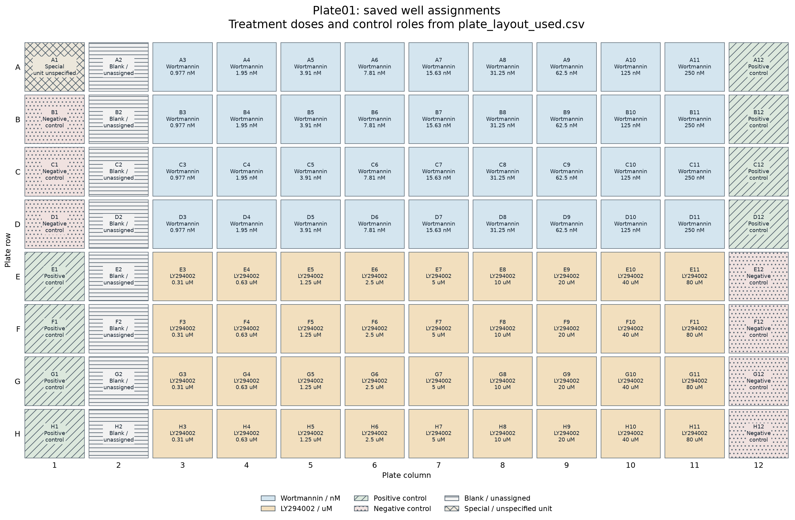
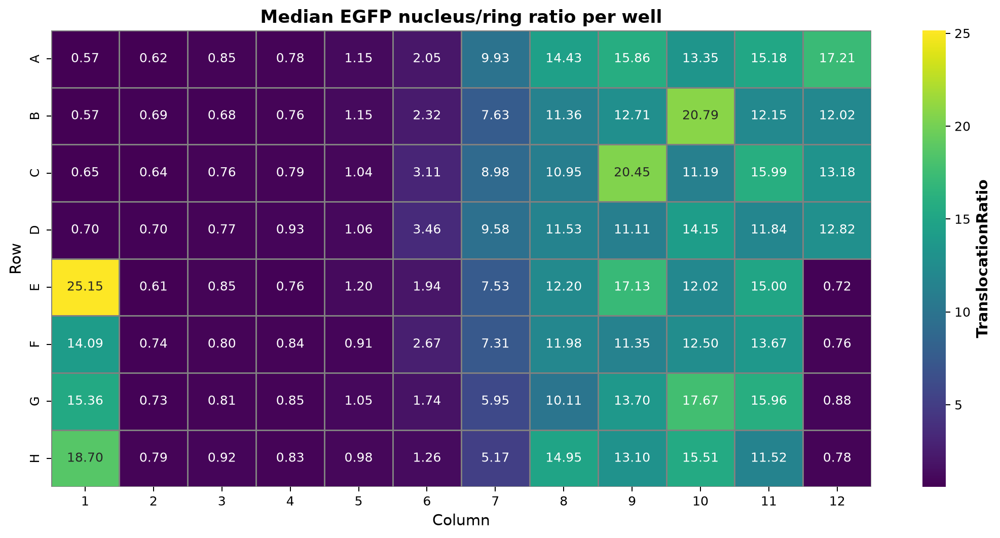
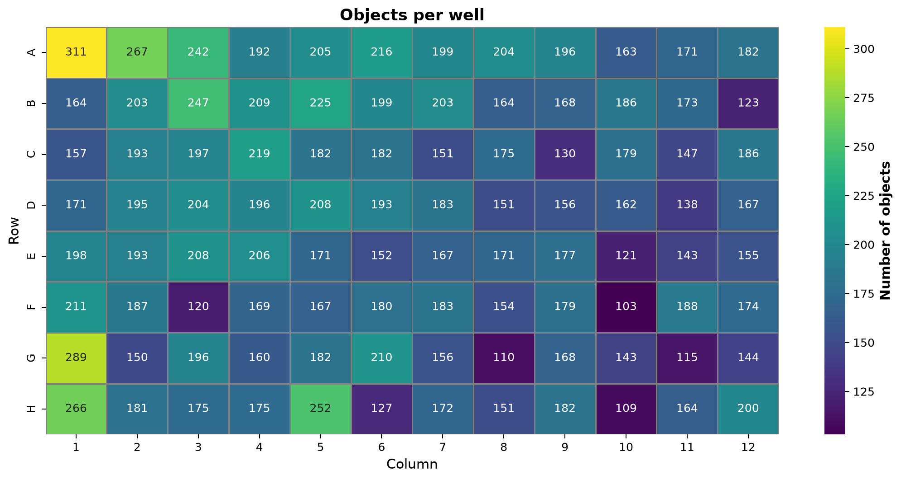
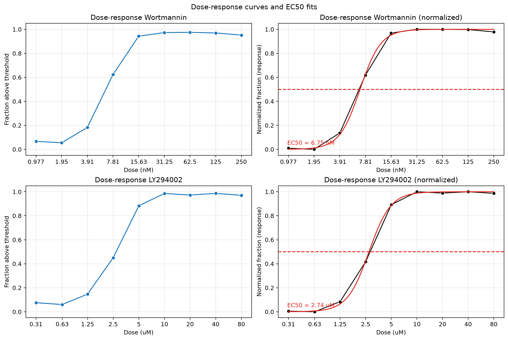

Smart microscopy / translocation assay
Measure EGFP inside nuclei and surrounding rings
DAPI defines the nuclei; the EGFP nucleus-to-ring ratio measures relative nuclear enrichment.

Existing result snapshot, not a new analysis. These Seaborn plots come from results/translocation/notebook_unified_run/transloc_gfp_dapi_0_2micron.czi/. The notebook and CLI share the analysis helpers. Click any plot for full resolution.
Every input uses the same measurement pipeline
- Validate and readDetect CZI, OME-Zarr HCS, or OZX. Check plate metadata, channels, scaling, and optional Excel assignments.
- Segment nucleiThreshold each DAPI field. Remove small objects, fill holes, and split touching nuclei with watershed.
- Measure EGFPBuild outer rings, measure nucleus and ring means, and calculate per-object ratios.
- Summarize and fitAggregate wells and doses. Fit increasing Hill curves, export tables, and draw quality-control plots.
- CZI supports lazy scene arrays or eager field reads; NGFF reads full-resolution fields without extracting OZX.
- The saved run uses Otsu thresholding; other supported global thresholds can be selected.
- The ring samples the area around a nucleus; it is not a whole-cell cytoplasm segmentation.
- The saved workbook assigns wells to treatments, doses, units, and controls before aggregation.
The ratio compares a nucleus with its own local ring
Per-object measurement
Measure raw intensities, not display-scaled fluorescence.
A non-finite or non-positive ring mean makes the ratio invalid.
Dose response
Pool valid cells from replicate treatment wells at each dose.
This is not the same as the median ratio heatmap or an unweighted average of well fractions.
The saved preview labels the physical ring width and its pixel equivalent. Rings exclude nuclear pixels and can be truncated by nearby objects or the image boundary.
Read the well assignments before interpreting the heatmaps

Download the saved well assignments. This layout image is generated from that CSV, not inferred from fluorescence. Special and blank wells remain explicitly labeled; their unspecified doses are not invented.
Controls appear in the well summaries, but only treatment wells with finite doses enter the dose-response table. The normalized fit panels use fitted bottom and top values, not positive-control normalization.


Interpret both maps with the plate assignments and saved well summary; color alone does not establish a treatment effect.
Fit the responding fraction, then inspect the normalized curve

The fit uses a bounded NumPy grid search for an increasing four-parameter Hill curve. The normalized panel subtracts the fitted bottom and divides by the fitted response range.
The estimates are specific to this dataset and segmentation settings, not general compound reference values. Too few finite positive-dose responses or constant responses leave the fit unavailable.
Inspect dose-response values · Inspect fit parameters and status
Keep analysis outputs separate from the published snapshot
New assay run
results/translocation/<run-name>/Cell measurements, well summaries, dose responses, fit results, field mapping, and analysis parameters.
When using an Excel layout, also save the assignments used for the run.
This documentation snapshot
examples/translocation/translocation_docs/The editable source, rendered walkthrough, copied plots, and compact supporting CSVs live together.
No links depend on ignored result folders. Rerunning the assay does not refresh these copied plots.
cd /d "F:\Pixi_Projects\zen_czi\smartmicroscopy"
pixi run --locked -e default python "examples\translocation\translocation_assay.py" ^
--input "data\transloc_gfp_dapi_0_2micron.czi" ^
--plate-layout "data\plate_layout_example.xlsx" ^
--output-dir "results\translocation\visual-example" ^
--plot-backend seabornCMD uses ^ for continuation, with no trailing spaces. Select an unused output folder to retain earlier results. The command illustrates the CLI; it did not create the snapshot shown above.
Seaborn writes static PNGs. The CLI defaults to Plotly for interactive HTML. Omit --plate-layout only when the built-in assignments match the sample.
The field loop feeds well summaries and dose fits
flowchart TD
A["main: parse CLI arguments"] -->|call| B["run_analysis: validate parameters and input"]
B -->|load| C["Load Excel or built-in well assignments"]
C -->|prepare| D["Load metadata, map fields to wells, check channels and XY scaling"]
D -->|iterate| E{"Next mapped field?"}
E -->|yes| F["Read or compute EGFP and DAPI planes"]
F -->|validate| G["Require matching two-dimensional planes"]
G -->|segment_nuclei| H["Threshold DAPI, clean foreground, split with watershed"]
H -->|make_ring_labels| I["Assign nearby background to nuclei and remove label contacts"]
I -->|measure_scene_objects| J["Measure EGFP nucleus and ring means"]
J -->|calculate| K["Record nucleus/ring ratio or NaN if invalid"]
K -->|continue| E
E -->|no| L["summarize_wells: pool field measurements by well"]
L -->|dose_response_table| M["Pool valid treatment-cell ratios by drug and dose"]
M -->|fit_hill| N{"Finite positive-dose responses sufficient and varying?"}
N -->|yes| O["Bounded grid search for increasing Hill curve"]
N -->|no| P["Store unavailable fit status and reason"]
O -->|collect| Q["Return AssayResults tables and preview"]
P -->|collect| Q
Q -->|write| R["Export field mapping and optional layout snapshot"]
R -->|write_analysis_outputs| S["Save CSVs, plots, fit status, and analysis parameters"]
Editable Mermaid flowchart. Validation and read errors stop the analysis; they are not successful empty results.
Follow the functions and edge cases
main() and run_analysis() parse options, reject incompatible ring-width settings, load input metadata, and enforce channel order EGFP then DAPI. prepare_scene_inputs() supplies either lazy scenes or a field-reader callback.
analyze_scenes() loads each mapped field, checks matching channel planes, and calls the segmentation and measurement helpers. Fields without nuclei produce no cell rows; they still contribute field and threshold bookkeeping.
make_ring_labels() uses nearest-nucleus distance to assign background pixels, then removes pixels touching a different nucleus or ring label. measure_scene_objects() uses label-wise pixel sums and areas; an empty ring or invalid ring mean yields a non-finite ratio.
summarize_wells() combines fields by well. dose_response_table() pools finite cell ratios from matching treatment wells rather than averaging their medians. fit_hill() rejects too few usable dose responses or a constant response and records the reason.
write_analysis_outputs() writes cell, well, dose, and fit tables plus plots and parameters. run_analysis() separately writes field_mapping.csv and, when an Excel layout is supplied, plate_layout_used.csv.
Sources and provenance
Assay README · CLI and orchestration · Segmentation, measurements, fitting, and plotting · Input adapters · Plate assignments
Plot snapshot: transloc_gfp_dapi_0_2micron.czi, from the existing unified notebook run. Saved parameters select Otsu, the Excel plate layout, channel order EGFP then DAPI, and Seaborn output. The segmentation image itself labels its field, threshold, ring width, and object count.
Editable visual source. Source review and existing result inspection only; no new assay was run for this page.